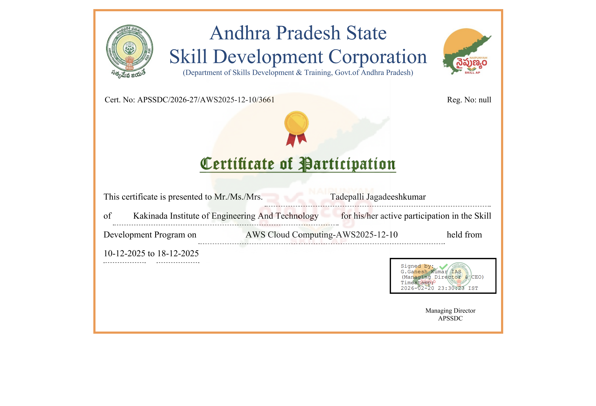
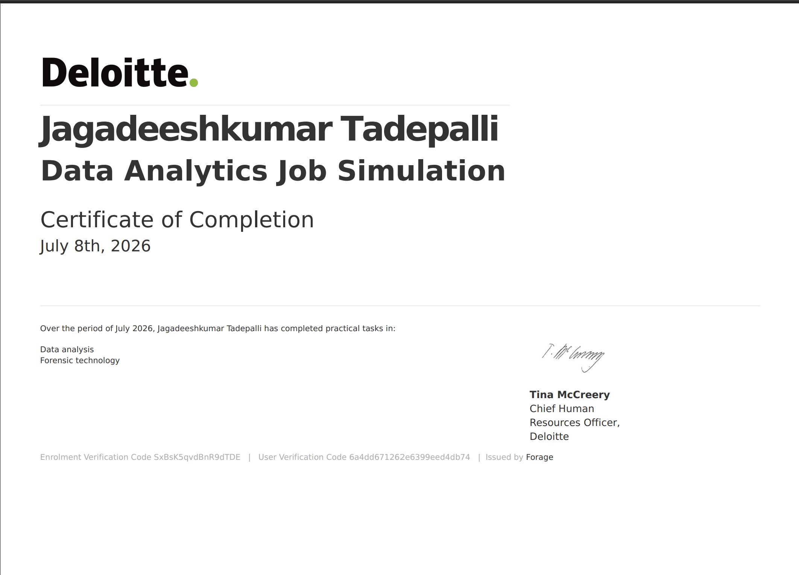

certifications

AWS CLOUD
This program gave me a strong foundation in cloud architecture, AWS core services, and the operational principles of modern cloud infrastructure.

DATA ANALYST
Completed a practical Data Analytics Job Simulation with Deloitte via Forage, gaining hands-on exposure to the workflows of data analysts and forensic consultants.

AI-ML
Completed a comprehensive internship focused on Artificial Intelligence and Machine Learning. During this period, I developed core technical skills and gained hands-on experience in intelligence analysis visualization and advanced investigative techniques.